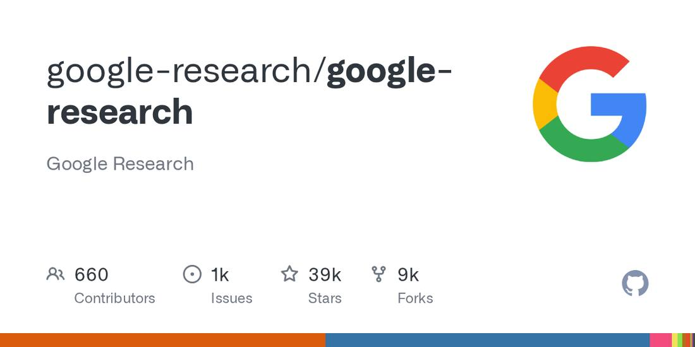
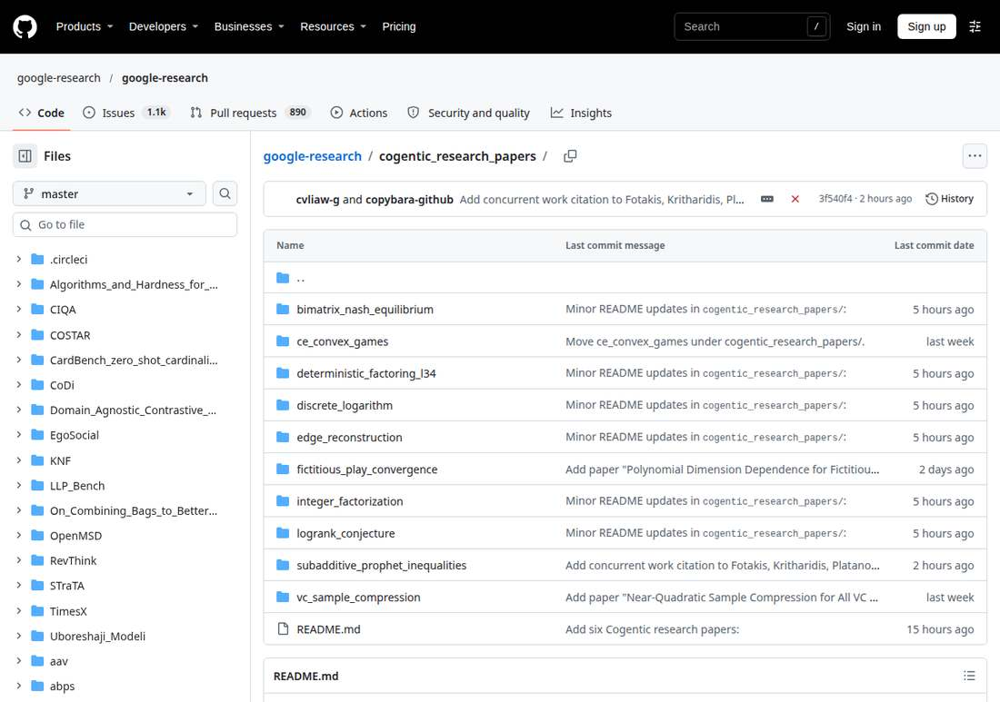

Google's Cogentic Posts Six AI-Written Math Papers, Including a Factoring Claim
Google Research posted six new mathematics papers to its public GitHub repository on November 25, 2026, all produced by Cogentic, a multi-agent proof system built on Gemini 4. The headline paper claims an unconditional integer factorization algorithm in time L_N[1/3, O(1)], matching the number field sieve's exponent without unproven assumptions, and a second paper claims deterministic subexponential factoring at L_N[3/4]. The papers have not been peer-reviewed, no outside mathematician has verified them, and the promised Lean 4 formalizations have not yet been released. The release does not claim polynomial-time factoring and does not break RSA encryption.

- 01THE SYSTEM IS INTRODUCED — September 30, 2026: Google Research posts an arXiv preprint introducing Cogentic, a multi-agent harness for automated proof discovery built on Gemini, with domain experts independently verifying early results.
- 02THE EARLY BATCHES — October 30 to November 23, 2026: Cogentic papers appear in the Google Research repository in batches, covering game theory, learning-theoretic compression and combinatorial auctions.
- 03THE SIX-PAPER BATCH — November 25, 2026: Google Research posts six new Cogentic papers, including unconditional integer factorization in L_N[1/3, O(1)], deterministic subexponential factoring, faster discrete logarithms, a 1/5-approximate Nash equilibrium algorithm, a log-rank bound and an edge-reconstruction proof.
WHAT HAPPENEDWhat Happened
Google Research posted six new mathematics papers to its public GitHub repository on November 25, 2026, all produced by Cogentic, a multi-agent proof system built on Gemini 4, with human involvement limited to the initial prompt. The batch covers number theory, game theory, communication complexity and graph theory, and the repository now holds ten Cogentic papers in total, with earlier batches dated October 30, November 18 and November 23.
The headline paper claims an unconditional integer factorization algorithm running in time L_N[1/3, O(1)]: a randomized algorithm that returns the complete prime factorization of any integer in expected time L_N[1/3, 105], with deterministic workspace L_N[1/3, 40]. The 1/3 exponent matches the growth rate of the number field sieve, the fastest factoring method used in practice, but without relying on the unproven assumptions cryptographers have leaned on since the early 1990s. It improves on the L[1/2] bound Hendrik Lenstra and Carl Pomerance proved in 1992.
A second paper drops randomness altogether and claims a deterministic subexponential factoring bound of L_N[3/4], where every deterministic factoring algorithm proved before it scaled exponentially with the number of digits; the previous best deterministic bound, from University of New South Wales mathematician David Harvey in 2021, was roughly the fifth root of N. Harvey said Google's new results appear to be a better complexity bound. The remaining four papers claim faster discrete logarithms in small-characteristic fields, a polynomial-time algorithm for 1/5-approximate Nash equilibria in two-player games, a break of the square-root barrier for the log-rank conjecture, and a proof of Harary's 1964 edge-reconstruction conjecture for dense graphs.
WHY IT MATTERSA 34-year gap, closed on paper.
The factoring claim is the one that will draw the attention. An unconditional algorithm at the number field sieve's exponent has been the open target since Lenstra and Pomerance proved L[1/2] in 1992: matching the sieve's speed without assuming unproven number theory. If the proof holds, it is the first time a machine has closed a gap of that age in pure mathematics, and it arrives one day after OpenAI's nine-paper drop claiming the matrix multiplication exponent is exactly 9/4, which this site covered as flash 540.
The deterministic paper matters almost as much. Removing randomness from subexponential factoring, with a worst-case bound of L_N[3/4], would move the result from a method that works in expectation to one that always works within the bound. That is the difference between a fast algorithm and a guaranteed one, and it is the claim Harvey, whose own bound it would beat, has publicly called a better complexity bound.
WHAT REMAINSClaims, not theorems, until the checks land.
None of this is verified yet. The papers have not been peer-reviewed, no outside mathematician has checked the proofs, and the complete Lean 4 formalizations the papers say have been finished will appear only in companion submissions that have not been released. The repository's own README says the folder is not an official Google product. OpenAI's own math collection carries the same warning, and three of its manuscripts were withdrawn after a sign error, which is the right precedent for how to treat this batch.
Two clarifications matter for readers who saw the rumors. This is not a claim of polynomial-time factoring, and it does not break RSA: the stated constant, 105, is far larger than the number field sieve's heuristic constant of about 1.92, and the algorithm routes numbers up to 210,000 to plain trial division. A separate online rumor that some lab has cracked factoring in P has no evidence behind it and is not this release.
THE SHIFTWhat Changed
SIGNAL JUDGMENT — ANALYSISA serious claim from a real system, still awaiting its check.
Cogentic is not a press release with a theorem attached; it is a published system with a track record, an arXiv paper from September, and earlier batches that domain experts independently verified. That is what separates this from the factoring-in-P rumor circulating alongside it, which has no evidence at all. But a track record is not a proof, and the proofs here have not been checked by anyone outside the system that wrote them. The honest posture is the one this site took with OpenAI's 9/4 claim: report the claim precisely, mark it unverified, and wait for the Lean formalizations and independent scrutiny. If they hold, a 34-year gap just closed. If they do not, the retraction will be as instructive as the claim.
WHAT REMAINS UNCERTAINWhat Remains Uncertain
EVIDENCEEvidence

Google Research posted six new mathematics papers to its public GitHub repository on November 25, 2026, all produced by Cogentic, a multi-agent proof system built on Gemini 4. The headline paper claims an unconditional integer factorization algorithm in time L_N[1/3, O(1)], matching the number field sieve's exponent without unproven assumptions, and a second paper claims deterministic subexponential factoring. The papers have not been peer-reviewed and the promised Lean 4 formalizations have not yet been released. The release does not claim polynomial-time factoring and does not break RSA encryption.
PRIMARY SOURCESPrimary Sources
- Google Research: Cogentic Research Papers
https://github.com/google-research/google-research/tree/master/cogentic_research_papers - RDWorldOnline: Google's Gemini 4 agent claims six math proofs in a day, including one on factoring 30 years in the making
https://www.rdworldonline.com/google-cogentic-ai-integer-factoring-bounds-lean-proofs/ - AI Frontier Post: Google's Cogentic agent posts six math papers, claiming proofs for problems open since 1964
https://aifrontierpost.com/articles/google-cogentic-six-math-papers/
RELATEDRelated Intelligence
- GPT-6 Astra Leads the Proof Behind a Candidate Lattice Definition of the Standard Model
- TeraWulf's AI Leases Now Drive 83% of Revenue as Bitcoin Mining Fades
- India's Payments Authority NPCI Spins Up AI and Blockchain Arm: NTSL, Its Fourth Subsidiary
- Anthropic's FlashProve Gives Model Answers a Cryptographic Receipt Proving Which Weights Produced Them